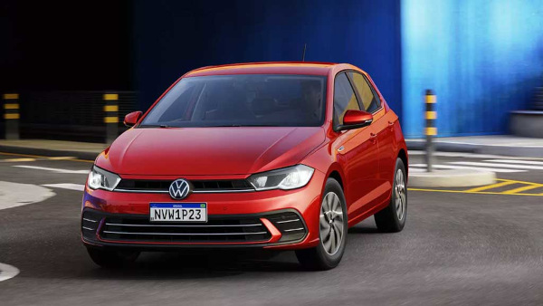

O Volkswagen Polo é um carro hatch compacto produzido pela Volkswagen, conhecido por seu design moderno, bom desempenho e tecnologia. O modelo possui motores eficientes, como o 1.0 MPI e o 1.0 TSI turbo, que podem chegar a cerca de 116 cv de potência, oferecendo bom equilíbrio entre desempenho e economia de combustível. Além disso, o Polo conta com recursos tecnológicos como painel digital, central multimídia com conectividade para smartphones e diversos sistemas de segurança, como controle eletrônico de estabilidade. Com bom espaço interno e porta-malas de aproximadamente 300 litros, o carro se destaca como uma opção confortável e prática no segmento dos hatchbacks compactos.
Voltar